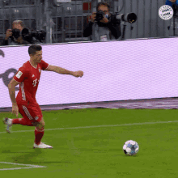

El futbol es uno de los deportes favoritos de Manuel, este deporte tiene mucha historia desde su creación y el como ha influido totalmente de una manera muy grande a nuestro mundo actual.

El futbol es uno de los deportes favoritos de Manuel, este deporte tiene mucha historia desde su creación y el como ha influido totalmente de una manera muy grande a nuestro mundo actual.
La historia del fútbol se considera a partir de 1869, año de fundación de la Asociación Inglesa de Fútbol, aunque en sus orígenes, al igual que los demás códigos de fútbol, se remontan varios siglos en el pasado, particularmente en las islas británicas durante la Edad Media.12 Si bien existían puntos en común entre diferentes juegos de pelota que se desarrollaron desde los años del siglo III a. C.2 Los primeros códigos británicos que dieron origen al balompié se caracterizaban por su poca organización y violencia extrema.3 No obstante, también existían otros códigos menos violentos y mejor organizados. Quizás uno de los más conocidos fue el calcio florentino, deporte de equipo muy popular en Italia que tuvo incidencia en los códigos de algunas escuelas británicas.4 La formación definitiva del fútbol tuvo su momento culminante durante el siglo xix.
Aqui un poco de historia de la invención del futbol: